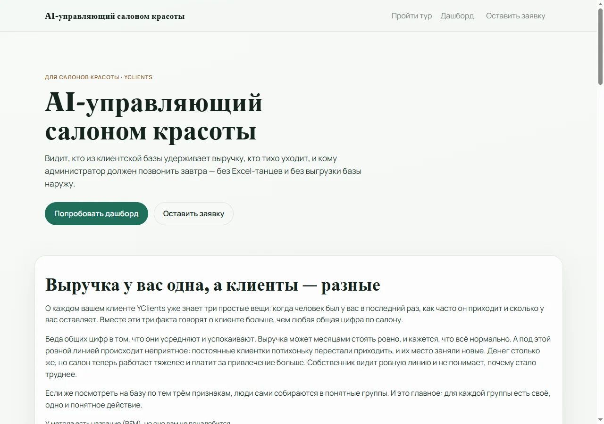
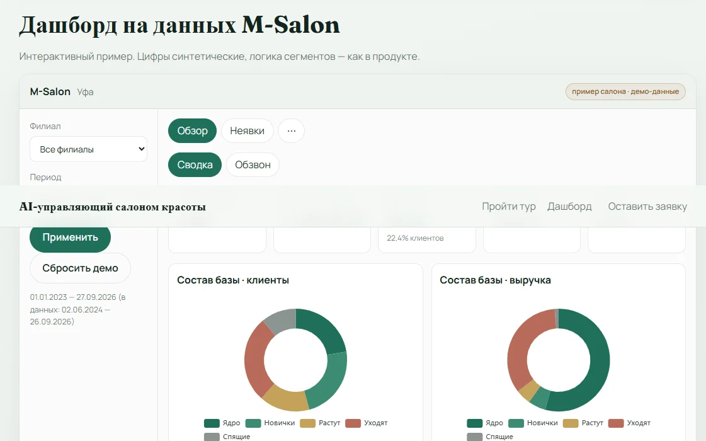
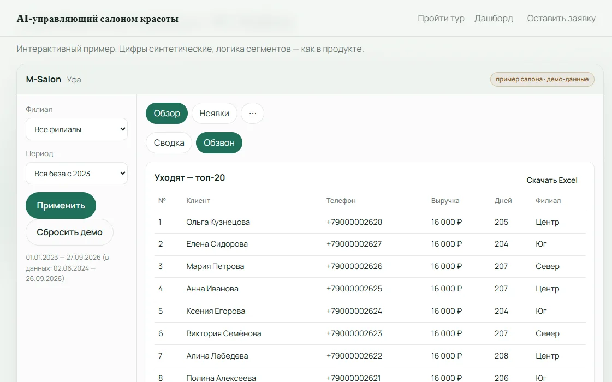

Кейс · 01
AI-управляющий салоном красоты
Управленческий дашборд поверх YClients: кто держит выручку, кто уходит, кому звонить на этой неделе. Для салона — локально; для знакомства — открытое демо без пароля и регистрации.
Открытое демо · без ограничений
Зайдите, нажмите «Попробовать дашборд» или прокрутите к блоку M-Salon: фильтры, «Обзвон», «Скачать Excel» — всё работает на синтетической базе, ничего не ломается.
- Доступ
- без регистрации
- В демо
- M-Salon · Уфа
- У заказчика
- локально у салона
Что увидите на сайте демо
Зачем это салону

Сводка и «что делать на неделе»

Списки на обзвон

Что сделал
Собрал слой между YClients и ежедневной работой салона. Клиенты делятся на «ядро / новички / растут / уходят / спящие» — у каждой группы своё действие: держать, дожать, вырастить, вернуть, не тратить бюджет.
Собственник за пять минут видит долю ядра и риски; управляющий забирает списки и Excel; администратор звонит по короткому листу. В бою данные остаются у салона; на сайте — только публичное демо, чтобы можно было потыкать до созвона.
Что на выходе у салона
- Дашборд с KPI, сегментами и планом на неделю
- Обзвон, неявки, выгрузка в Excel
- Установка на компьютер салона — база не уезжает «в облако для аналитики»
- Чтение YClients; ярлыки групп в CRM — по желанию
На демо-сайте нет реальных имён и телефонов — только вымышленная студия M-Salon.
Сначала посмотрите демо, потом решайте про пилот. ai-manager-beauty.maximrafikov.ru · или опишите задачу →